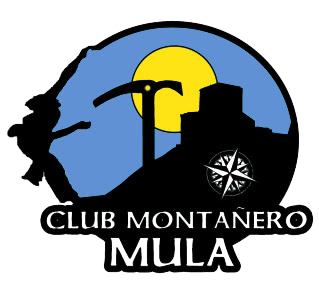

|  |
Cub Montañero MulaEl Club Montañero Mula nace en 1996 cuando un grupo de jóvenes muleños, unidos por sus inquietudes por la montaña, deciden formalizar un Club y así poco a poco aprender todo lo necesario para desenvolverse con soltura en las distintas actividades que podemos realizar en la naturaleza. Poco a poco el Club fue creciendo y desarrollando distintas actividades por todo el mundo (Mont Blanc, Toubkal, Huyana Potosí, Madeira, Ticcino…) y en los principales parajes del pais como Sierra Nevada, Pirineos, Naranjo de Bulnes, Riglos, Galayos… Además, durante muchos años ha sido el Club Murciano que más apostó por los Raids de Aventura y las Travesías Nocturnas, llevando a cabo numerosas ediciones. |